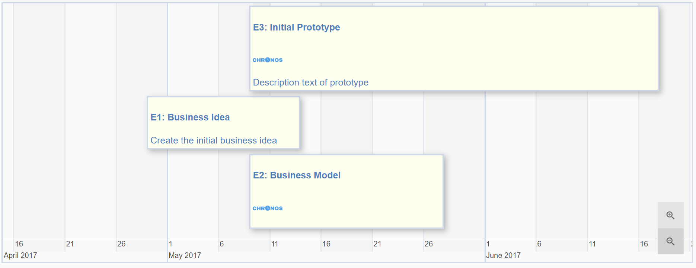

<section layout="column" layout-align="center center">
    <h2>{{ $ctrl.getHeadline() }}</h2>
    <div layout="row" style="width: 100%">
    <md-button flex class="md-raised landing md-accent" ng-click="$ctrl.newTimeline()">Create a new timeline</md-button>
    </div>
</section>


<!-- We define timelines in routes.js.-->

<md-card ng-repeat="timeline in $ctrl.timelines | orderBy:timeline.created_at:true" >
    <md-card-title>

        <div class="image" layout="row" layout-align="center center" ng-click="$ctrl.view(timeline)" style="max-width:20%;height:auto;" layout-padding>
            
        </div>

        <md-card-title-text layout-align="center start" layout-padding>
             <span class="md-headline" layout-align="start start">{{timeline.name}}</span>
             <span class="md-subhead" layout-align="start start">User: {{timeline.uname}}</span>
             <span class="md-subhead" layout-align="start start">Creation Date: {{$ctrl.dateFormat(timeline.created_at)}}</span>
             <span class="md-subhead" layout-align="start start">Description: {{timeline.description}}</span>
        </md-card-title-text>

        <md-card-title-text layout-align="center end" >
             <md-card-actions layout="row" layout-align="end center">
                 <md-button class="md-icon-button" aria-label="Edit Item"  ng-click="$ctrl.edit(timeline)" ng-hide="$ctrl.showSwitch()">
                     <md-icon>
                         <ng-md-icon icon="mode_edit" ></ng-md-icon>
                     </md-icon>
                 </md-button>

                 <md-button class="md-icon-button" aria-label="Delete Item" ng-click="$ctrl.delete(timeline)" ng-hide="$ctrl.showSwitch()">
                     <md-icon>
                         <ng-md-icon icon="delete"></ng-md-icon>
                     </md-icon>
                 </md-button>
                 <md-switch  md-invert ng-model="timeline.privacySetting" ng-change="$ctrl.showDialog(timeline.privacySetting , timeline)" layout-align="end center" ng-hide="$ctrl.showSwitch()">
                 Public
                 </md-switch>
             </md-card-actions>
        </md-card-title-text>
    </md-card-title>


    <!--<div style="visibility: hidden">
        <div class="md-dialog-container" id="myDialog">
            <md-dialog layout="fix" layout-padding></md-dialog>
        </div>
    </div>-->

</md-card>